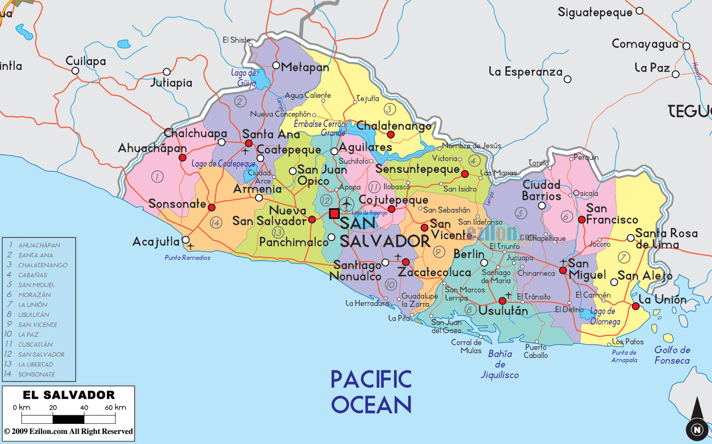

El Salvador
El Salvador is located in Central America and part of North America. It is located between Honduras and Guatemala next to the Pacific Ocean. It is approximately 21,000 sq km which is smaller than Lake Winnipeg!
El Salvador is known as the "Land of Volcanoes" with 23 that are currently active. The Volcano of Santa Anna is the highest in the country which stands at 2381 metres above sea level. They can be accessed by hiking trails but keep in mind that it can be challenging and dangerous. It is best to view the volcanoes with guide.
